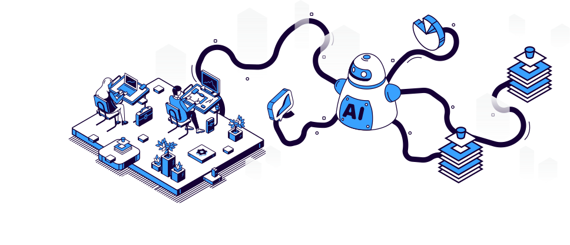

针对研发及教育的计算平台

方便管理
为平台管理者提供一站式的资源管理平台，用过资源配置、监控、权限管控等可视化工具，大大降低平台管理者的管理成本

易于部署
Pumpkin 支持 helm 方式的快速部署，简化复杂的部署流程
性能优越
提供高性能的分布式计算体验，通过多方面优化来保证各个环境的流畅运行，同时通过资源调度优化与分布式计算优化，进一步提高模型训练效率

兼容性好
平台支持异构硬件，如 GPU、NPU、FPGA 等，满足各种不同的硬件集群部署需求；同时也支持多种深度学习框架，并可以通过自定义镜像方式支持新增框架